Workstream A
AI Flower Image Generation
Help users customize flowers to their preferences and preview the arrangement through AI-generated images.
01
Overview & Role
Workstream A
Help users customize flowers to their preferences and preview the arrangement through AI-generated images.
Workstream B
AI-assisted greeting card creation.
Workstream C
Analysis of selected admin features, actors, workflows, business rules, dependencies, and access requirements where applicable.
02
Business Problem
AI Flower Image Generation
AI Greeting Card Creation
Admin Management
03
Business Analysis
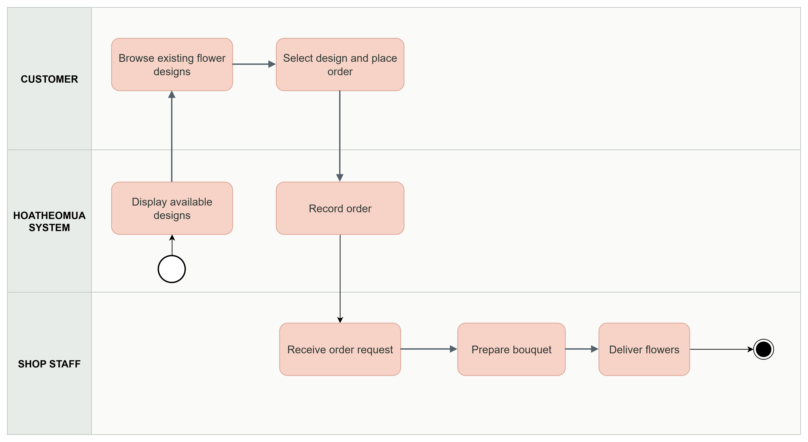
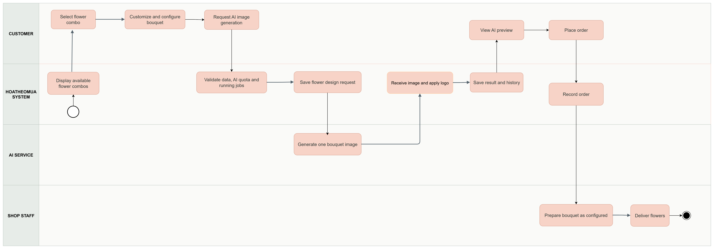
| Code | Functional group and scope |
|---|---|
| F01 | Initialize a flower design request Record the original source Combo, select an available Size and configure Combos within shop limits. |
| F02 | Generate a flower design with AI Validate inputs, daily quota and running jobs; generate an illustrative image using the configured materials and input priority. |
| F03 | View and manage AI results Display generated images and preserve each successful result as a separate history entry. |
| Code | Content |
|---|---|
| BR-01 | Combo configuration Each request must record the original source Combo and the Combo configuration selected for the Size. |
| BR-02 | Size selection Customers must select a valid, available Size. |
| BR-03 | Combo configuration by Size Customers may increase the source Combo quantity or combine other Combos within the configurations and limits set by the shop. |
| BR-04 | AI input priority Combo configuration by Size → Size → Bouquet style → Mockup → Wrapping paper and ribbon. |
| BR-05 | AI image composition AI must use the material components and quantities from the Combo configuration; the generated image is illustrative only. |
| BR-06 | Daily AI quota Each customer has a maximum of 3 AI image generations per day. Failed jobs receive a quota refund according to the applicable rule. |
| BR-07 | AI job limit Each flower design request may have at most one running AI job at a time. |
| BR-08 | AI history retention Each successful generation must be saved as a separate result without overwriting previous history. |
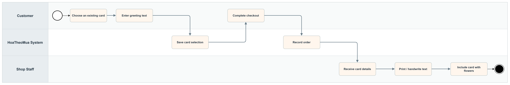
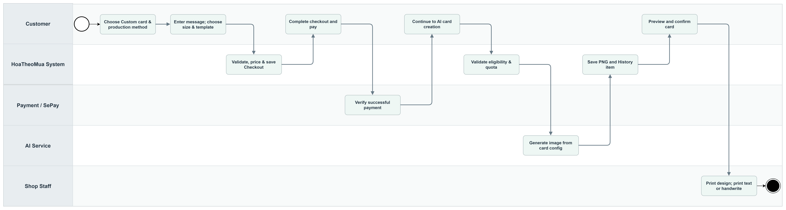
| Code | Functional group and scope |
|---|---|
| F01 | Card configuration at Checkout Select card type, Printed/Handwritten format, Size and Template, enter a greeting, attach an image, and calculate the price |
| F02 | AI card generation Check payment and quota, generate an image, regenerate, and confirm the card |
| F03 | Created card management View history and details, download images, and select a card from History for Checkout |
| Code | Content |
|---|---|
| BR-051 | Greeting content Customers must enter a greeting when selecting a card. The content must meet the applicable word limit. |
| BR-052 | Attached image Each request may include at most one PNG/JPG image, no larger than 10 MB. |
| BR-053 | Card quantity Each Checkout may have at most one card selection at a time. |
| BR-054 | Card pricing Printed card = Size price. Handwritten card = Size price + word-count surcharge. |
| BR-048 | AI card generation limits A maximum of 10 generations per day per customer and 3 generations per source flower design. Both limits apply simultaneously. |
| BR-044 | Regeneration conditions Cards may only be regenerated during Custom Card creation after successful payment. Regeneration from History is not allowed. |
| BR-154 | Card image content Typed cards must display the greeting verbatim. Calligraphy cards are not required to render the greeting on the AI image. |
| BR-272 | Editing after payment After editing, the greeting must not exceed the word count already paid for. |
| Code | Functional group and scope |
|---|---|
| A01 | Manage flower mockups STORY-050 → 053 |
| A02 | Manage Custom AI flower size configurations STORY-079 → 083 |
| A03 | Manage flower wrapping style images STORY-074 → 078 |
| A04 | Manage card sizes STORY-054 → 056, 062–063 |
| A05 | Manage Custom AI card templates STORY-057 → 060, 065 |
| A06 | Manage handwritten card surcharges STORY-061, 064, 066–068 |
| A07 | Manage Free AI card templates STORY-069 → 073 |
04
Requirements & User Stories
[Replace with the actual user story and its supporting fields.]
[Replace with the actual user story and its supporting fields.]
[Replace with the actual user story and its supporting fields.]
05
Solution & Screens
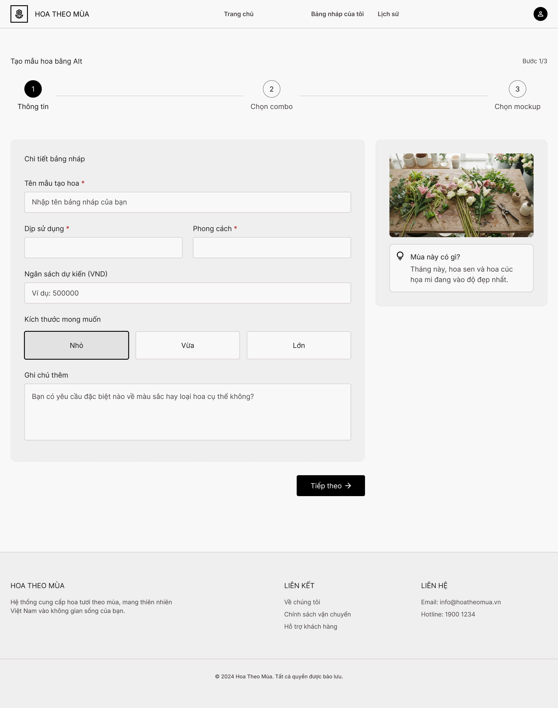
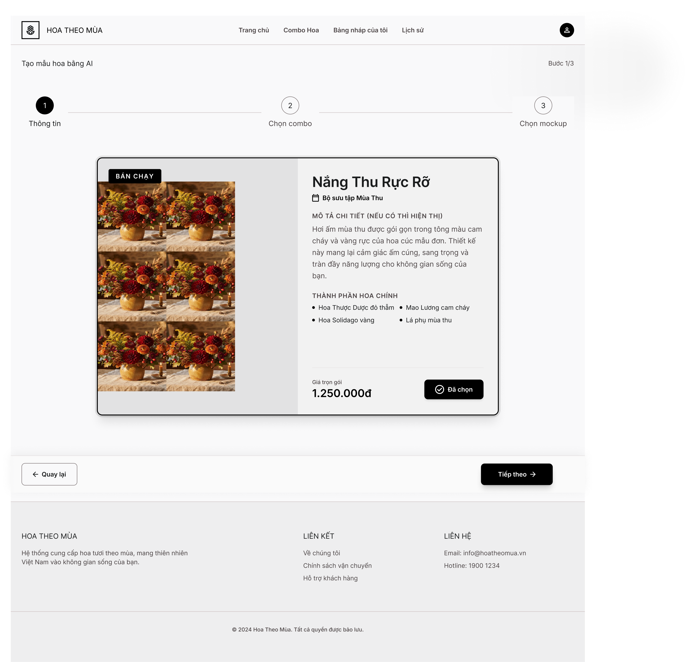
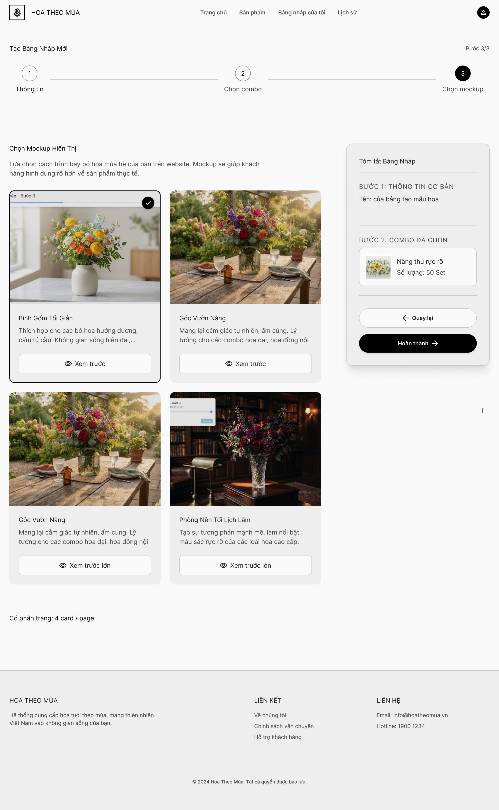
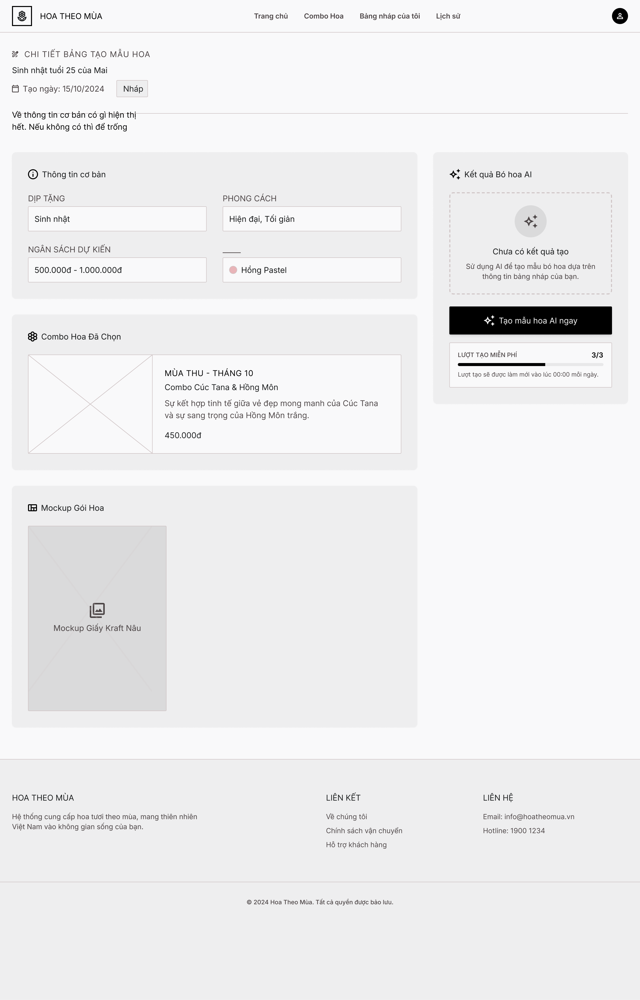
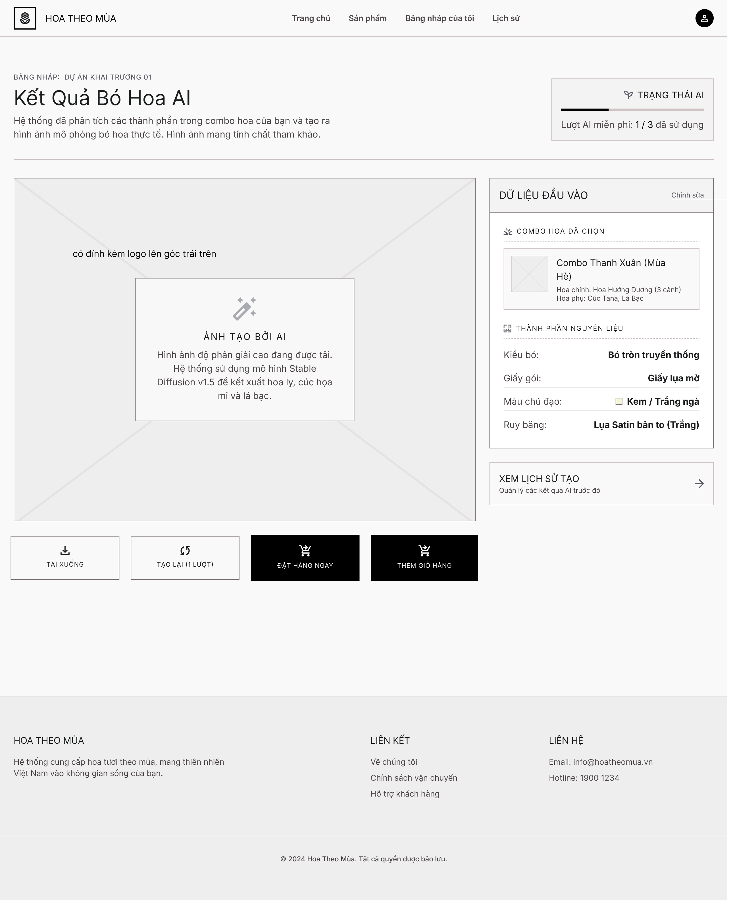
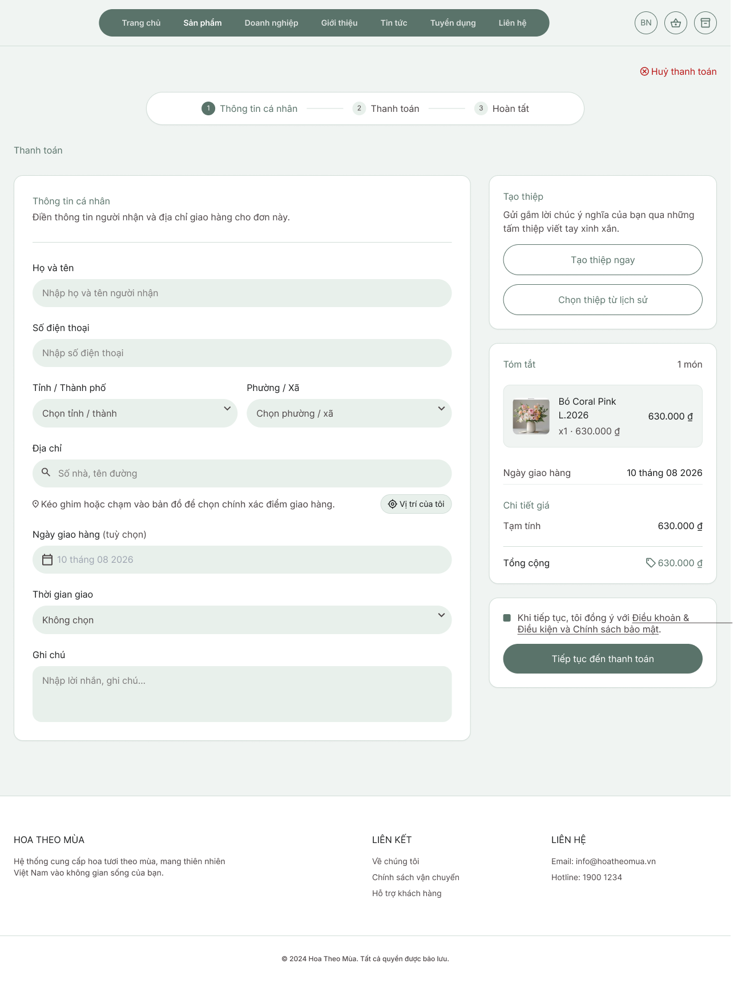
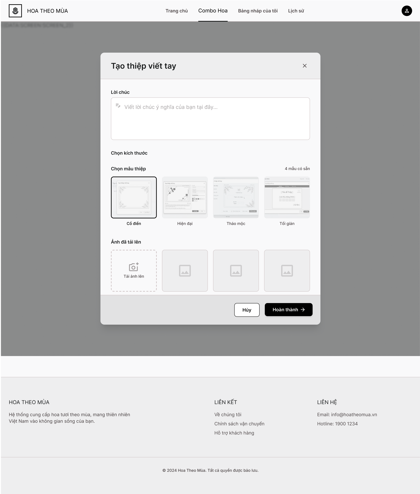
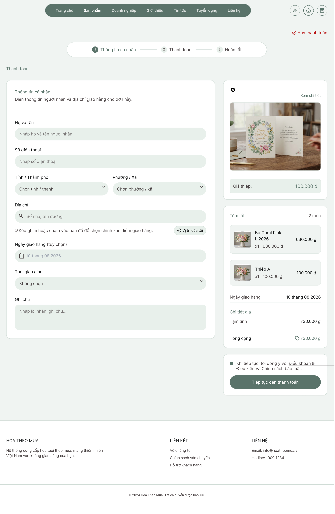